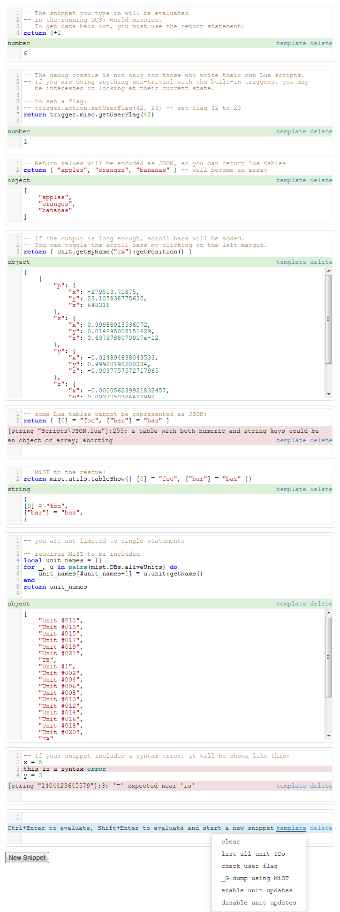

"DCS Witchcraft" is:
- a node.js server application
- a Lua script that runs in the DCS: World mission scripting environment and talks to the node.js server via a TCP connection
- some web applications, including a debug console that allows you to execute Lua snippets inside the running mission and look at the return values
The most interesting feature right now is the Lua debug console. To decide whether you want to go through the process of setting it all up, take a look at the following screenshot to get an idea of the capabilities:
